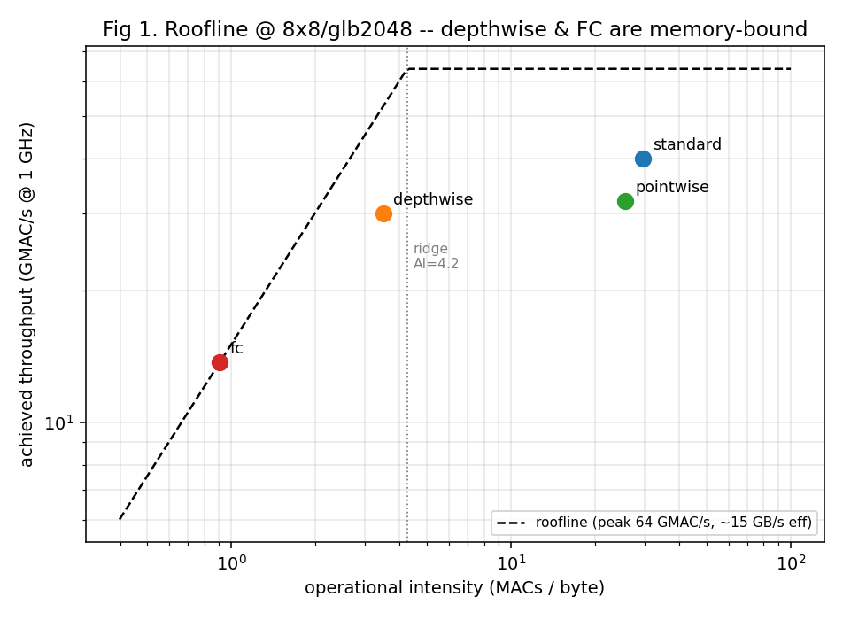
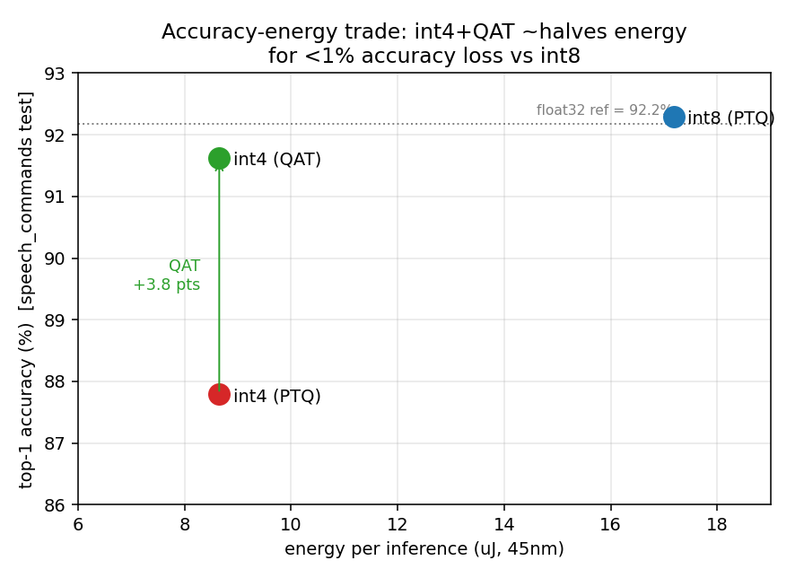
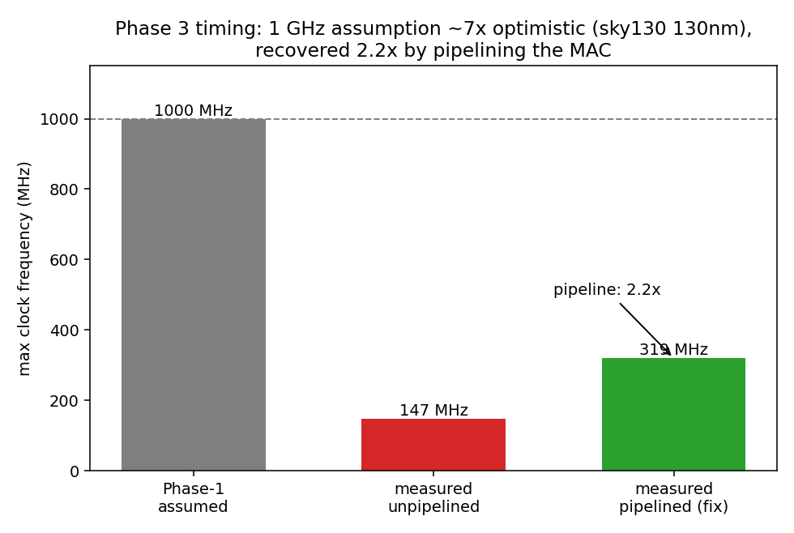

Hardware Accelerator · Model↔Silicon Co-Design
Always-on keyword spotting runs on billions of battery-powered edge devices, which makes per-inference energy a first-order design constraint. Architects routinely prune an accelerator design space with fast analytical models (Timeloop/Accelergy) long before committing to RTL, yet the fidelity of those early estimates against real silicon is seldom quantified end to end on an open, reproducible flow. This project closes that loop for a depthwise-separable CNN (DS-CNN) keyword-spotting accelerator: an analytical design-space exploration with committed pre-RTL predictions, then a synthesizable implementation carried to the open-source SkyWater 130 nm PDK. The area estimate agrees to within ~1× after node and place-and-route corrections, while the implicit 1 GHz clock assumption is ~7× optimistic — an error recovered 2.2× by pipelining. A full OpenLane place-and-route routes DRC-clean at ~139 MHz (within ~6% of the gate-level estimate), and the same RTL also maps to a Lattice ECP5 FPGA with a flashable bitstream. Along the way, a common depthwise-modeling pitfall (over-counting MACs ~64×) is corrected, and two energy levers are quantified: depthwise/pointwise fusion (−23%) and int8→int4 precision (−50% energy for under a 1-point top-1 accuracy loss with quantization-aware training).



| ASIC — Sky130 (OpenLane) | FPGA — ECP5-45 (Yosys+nextpnr) | |
|---|---|---|
| Result | DRC-clean routed layout | flashable bitstream |
| Area / size | 0.63 mm² | 64 DSPs, 4.4k LUT, 4.1k FF |
| Clock | ~139 MHz (post-layout) | ~54 MHz (post-route) |
| Power | ~263 mW (peak) | — |
Everything runs on open-source tools; full instructions and scripts are in the repository.
Design-space exploration + energy/area models (pinned Docker image):
docker compose run --rm tutorial bash
# inside the container:
python3 scripts/make_problems.py
python3 scripts/sweep.py
MPLBACKEND=Agg python3 scripts/analyze.pyRTL: verify, synthesize, and time (Icarus Verilog + Yosys):
cd rtl
./run_sim.sh # functional check vs a golden matmul
./run_synth.sh # synthesis to sky130 -> area
./timing.sh # gate-level STA -> critical path / Fmax
bash fpga.sh # map to an ECP5 FPGA (+ nextpnr for a bitstream)The Sky130 place-and-route (OpenLane) and the FPGA bitstream flow run on an x86 Linux box or a GitHub Codespace — see the repository README.
This is a rigorous, reproducible validation case study, not a claim of a new state-of-the-art accelerator. The constituent techniques — the DS-CNN model, weight-stationary arrays, Timeloop/Accelergy exploration, layer fusion, quantization — are established. The contribution is their integration into one open predict-then-measure loop, the quantified fidelity of analytical models against real silicon, and the corrected modeling pitfall.